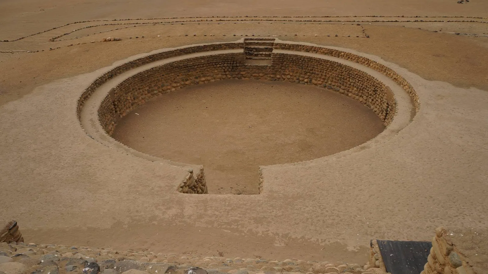

Investigación y rescate patrimonial
- Prospección y levantamiento técnico de sitios arqueológicos vulnerables.
- Intervención, adecentamiento e instalación de infraestructura básica.
- Vinculación con gobiernos locales y comunidades para museos de sitio y centros de interpretación.
- Inventarios, mapeos, estudios de campo y laboratorio.